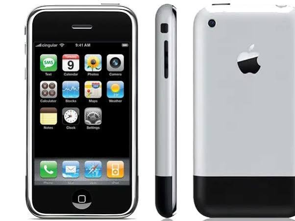

En bemerkelsesverdig oppdagelse fra det amerikanske firmaet Apple vekker nå internasjonal interesse. Dette produktet har potensialet for å kunne åpne døren for en helt ny måte å bruke teknologi på. Kan dette være starten på en ny æra for moderne teknologi?
EN OPPDAGELSE SOM ENDRER ALT
I flere år har mennesker brukt forskjellige teknologier for seg selv som iPod, mobiltelefoner og internett på datamaskin, men nå har Apple kommet ut med et helt nytt produkt som samler egenskapene til disse enhetene og setter de sammen i en som kalles iPhone.
Det som gjør selve enheten spesiell er egenskapene for å kunne høre på musikk, surfe på internettet, og navigere gjennom telefonen med en berøringsfølsom skjerm. Dette utfordrer også hvordan mennesker tidligere har sett for seg og brukt teknologi.
SLIK BLE TEKNOLOGIEN UTVIKLET
Utviklingen på iPhone bygger videre på Apple sine tidligere oppfinnelser som digitale musikkspillere og berøringsskjermer. En sentral del av teknologien er funksjonene som Multi-touch, denne registrerer berøringer på skjermen og bidrar til å utføre handlinger gjennom fingerbevegelser i stedet for å være avhengig av fysiske knapper.
Gjennom testing av programvaren, maskinvaren og brukergrensesnitt til enheten har iPhone utviklet en enhet som kombinerer flere funksjoner i et kompaktformat.
TEKNOLOGIVERDENEN REAGERER
Lanseringen av produktet kan få betydning for hele markedet for bærbar elektronikk. Tidligere har andre produkter som musikkspillere vært laget for å kunne lagre og spille musikk. Nå har Apple bevegd seg og utviklet et produkt som kombinerer flere digitale funksjoner som folket er fornøyd over.
Apple-sjef Steve Jobs beskriver selv iPhonen under lanseringen: «These are not 3 separate devices, this one device, and we are calling it iPhone, Apple is going to reinvent the phone».
DETTE TILBYR iPhone
- En enhet – tre funksjoner
- Multi-Touch skjerm
- Internet i lommen
- Musikk og underholdning
KAN DETTE FØRE TIL ET PARADIGMESKIFTE
Den nye iPhone kan representere en viktig endring i hvordan mennesker tar i bruk elektroniske enheter. Tidligere var mange digitale enheter avhengige av fysiske knapper og en begrensende funksjon. Med nye funksjonen Multi-Touch så introduseres en annen måte å navigere og kontrollere teknologien på.
Dersom denne type brukergrensesnitt blir tatt i bruk av flere teknologiselskaper, kan det utfordre dagens etablerte løsninger. Likevel er det for tidlig for å vurdere, og iPhonen kommer til å føre til et paradigmeskifte. Det framstår nå å se om denne teknologien blir til en standard i framtidens elektronikkbruk, eller om den vil være først og fremst en videreutvikling av løsninger vi allerede kjenner til.
HVORDAN KAN DETTE FORANDRE SAMFUNNET
Den nye kombinerte Apple-telefonen kjent som iPhone, med 3,5 tommers skjerm og fysisk hjem-knapp. Denne nye teknologien kan få konsekvenser med blant annet musikkbransjen. Det å sette sammen 3 enheter i en gjør at det blir enklere å kombinere underholdning, informasjon og kommunikasjon.
Det kan oppstå en del konkurrenter som baserer sitt nye produkt på iPhonen, produsenter kan utvikle lignende løsninger eller noe helt nytt for å holde tempo med utviklingen. Et spørsmål vi må selv spørre er da: har folket egentlig bruk for så mange funksjoner i en enhet, og kommer dette til å påvirke avhengigheten av teknologi i hverdagen vår?
Fakta om iPhonen
| Presentert | 09.januar.2007 |
| Produsent | Apple |
| Skjerm | 3,5 tommer |
| Lagringskapasitet | 4GB / 8GB |
EN NY TEKNOLOGISK TIDSALDER
Lanseringen av iPhone kan være begynnelsen på en ny vei i moderne teknologi. Apple viser med iPhone hvordan framtidens mobiltelefoner kan utvikles. Likevel er det bare å vente å se om denne nye teknologien kan føre til et teknologisk paradigmeskifte, eller om det heller er en videreutvikling av dagens løsning.
Referanser
- allaboutstevejobs. (2007, januar 9). allaboutstevejobs.com. Hentet fra Macworld 2007: https://allaboutstevejobs.com/videos/keynotes/macworld_2007
- Apple. (2007, januar 9). apple.com. Hentet fra newsroom: https://www.apple.com/no/newsroom/2007/01/09Apple-Reinvents-the-Phone-with-iPhone/
- Apple. (2026). apple.com. Hentet fra newsroom: https://www.apple.com/newsroom/2007/01/09Apple-Reinvents-the-Phone-with-iPhone/
- Facebook. (2026, januar 9). facebook.com. Hentet fra TheBoardroom: https://www.facebook.com/TheBoardroom/videos/%EF%B8%8F-on-this-day-in-2007-steve-jobs-unveils-the-very-first-iphone-an-ipod-a-phone-a/1799743724059091/
- MacWorld. (2007, januar 9). macworld.com. Hentet fra article: https://www.macworld.com/article/183052/liveupdate-15.html
- networkworld. (2007, januar 9). networkworld.com. Hentet fra article: https://www.networkworld.com/article/837470/lan-wan-macworld-jobs-introduces-iphone-appletv.html
- New york post. (2023, januar 9). https://nypost.com/. Hentet fra Us news: https://nypost.com/2023/01/09/on-this-day-in-history-jan-9-2007-steve-jobs-introduces-apple-iphone-at-macworld-in-san-francisco/
- Open AI. (2026, november 9). ChatGPT.